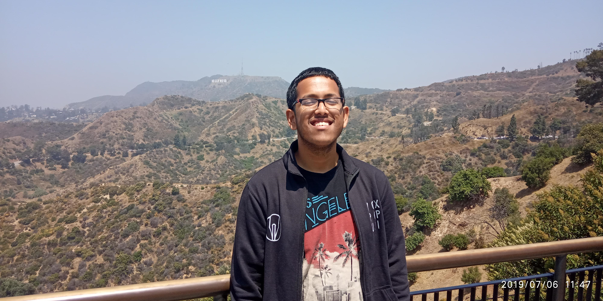
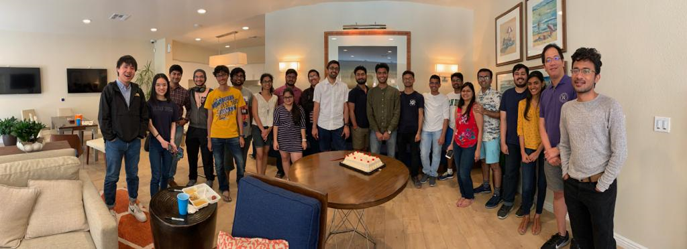
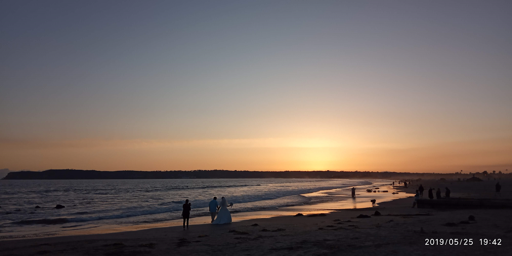

April 12, 2020
“Hope is a good thing, maybe the best of things, and no good thing ever dies.” - Andy
Dufresne, The Shawshank Redemption Well, I guess this summarizes my philosophy in
approaching this internship. I had an interesting summer'18 at NYU Tandon School
of Engineering which exposed me to the wonderful ocean of opportunities called 5G.
However, I wanted more. I took the decision of staying back at IIT Kanpur for another
year as a Dual Degree student and started working with Prof Rohit Budhiraja who
currently is my thesis supervisor. I also decided to give another shot at a research
internship abroad. As it turned out, I got selected for the 2019 cohort of the SN Bose
Scholars’ Program and took this opportunity to secure an internship offer from Prof.
Xinyu Zhang, University of California, San Diego. I was already acquainted with the visa
procedures and with all that done, I safely landed in the US on 11th May.
I lived with Srinath Muralidharan, a Khorana scholar from IITM also interning at UCSD,
in a shared apartment with a UCSD undergrad located in La Jolla neighbourhood. I ended
up undertaking two mini-projects with Prof. Xinyu, details of which are probably not
required in this space. Throughout my internship, I was working with Tejas Sadarahalli,
a Masters’ student at UCSD. We were helped and motivated by, a first-year Ph.D. student
in his lab. As someone who had no exposure in working on actual hardware before, the
experience was very enriching and transforming and I ended up learning a lot, thanks to
Renjie’s patient guidance. We also collaborated extensively with Prof. Sujit Dey’s lab,
and I must make a special mention of Mr. Sabur Hassan Baidya, a Ph.D. student at UC
Irvine and prospective postdoctoral fellow at UCSD, for his drive-in getting the work
done.
Besides this, the group meetings and talks and conferences I attended during my short
visit shall all be firmly imprinted in my mind. UCSD felt very much at home courtesy
Prof Dinesh Bharadia, who happens to be an IITK alumnus, and his group, comprising
seniors from the IIT ecosystem. Prof Dinesh and Prof Xinyu are a part of the same
integrated group, and I had the fortune of being a part of many informal gatherings,
most notably a lab graduating lunch by the poolside! While I did have some exposure to
research already, my experience this summer taught me the values of patience and
systematic approach. Being unfamiliar with systems work, I often made silly errors in
the setup and every day during my internship, I learnt loads about how to debug errors,
both software and hardware, and how to ensure foolproof design by treating each part
separately.

However, in the process, I started soul-searching and thinking about what should be my
next step. As of now, I have decided to have a short stint in the industry before a
possible switch to a PhD program. One problem which I have faced both my summers as an
intern in the US is that the schedule is always tight for faculty and often they do take
their well-deserved vacations in this period itself. Hence, it is wise not to have too
high expectations of output in the short duration of an internship, in my opinion.
Sometimes, it might be possible to continue the work remotely, which can lead to a
fruitful outcome (a publication or patent).
Besides lab work, I honed my cooking skills this internship and how! Most of my days
ended in me looking up some or the other recipe on YouTube and getting to work in the
kitchen. After my return to India, I even cooked a dish and offered it to my grandma,
and she loved it! Cooking is an essential survival skill in the US and definitely has
nothing to do with one’s gender! With the limited stipend amount, I also learnt to
manage my expenses so that I stay within limits and don’t break the bank!

San Diego is aptly described as ‘America’s Finest City’. Every nook and corner of the
city is breathtakingly beautiful, with its wonderful California beaches and absolutely
lovely weather all year round! Many mornings and evenings I would simply take a casual
stroll and drool at the lovely buildings all around, hoping to save enough to buy myself
a home someday

There are quite a few places to visit in and around San Diego. However, a severe
handicap to this was that I didn’t know how to drive. Hence places far-flung were out of
bounds. Still, in the brief duration that I was there, I managed to visit Tijuana
(Mexico), Los Angeles and must-visit San Diego spots such as Cabrillo National Monument,
Balboa Park, Gaslamp Quarter, Pacific Beach, Mission Beach, and the Secret Swings!
All in all, 9 weeks flew by faster than I could imagine. With many lessons learnt and
many memories to cherish, I left for home on 12th July. I hope this helped a little. I
can always be contacted via email: sdatta@iitk.ac.in.